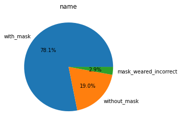
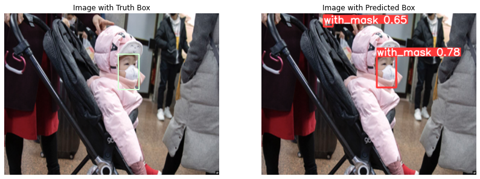
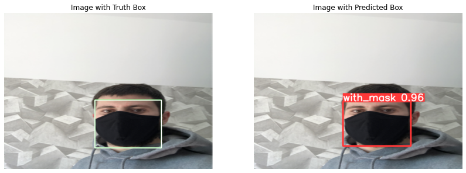

YOLOV5
[1]:
# !unzip -q /content/drive/MyDrive/タスク/テスト作成/Answer_object_detection/data/question_01.zip
[2]:
# !unzip -q /content/question_01/train.zip
[3]:
# !unzip -q /content/question_01/test.zip
Git Clone
[4]:
!git clone https://github.com/ultralytics/yolov5 # clone
!pip install -qr yolov5/requirements.txt # install
Cloning into 'yolov5'...
remote: Enumerating objects: 13286, done.
remote: Total 13286 (delta 0), reused 0 (delta 0), pack-reused 13286
Receiving objects: 100% (13286/13286), 11.98 MiB | 14.43 MiB/s, done.
Resolving deltas: 100% (9254/9254), done.
|████████████████████████████████| 596 kB 5.4 MB/s
[5]:
import pandas as pd
import numpy as np
import os
import glob
from datetime import datetime
import xml.etree.ElementTree as ET
import cv2
import matplotlib.pyplot as plt
import seaborn as sns
import warnings
warnings.filterwarnings('ignore')
データの前処理
[6]:
annotations_path = '/content/train/annotations'
[7]:
dataset = {
'file':[],
'name':[],
'width':[],
'height':[],
'xmin':[],
'ymin':[],
'xmax':[],
'ymax':[],
}
[8]:
for anno in glob.glob(annotations_path+'/*.xml'):
tree = ET.parse(anno)
for elem in tree.iter():
if 'size' in elem.tag:
for attr in list(elem):
if 'width' in attr.tag:
width = int(round(float(attr.text)))
if 'height' in attr.tag:
height = int(round(float(attr.text)))
if 'object' in elem.tag:
for attr in list(elem):
if 'name' in attr.tag:
name = attr.text
dataset['name']+=[name]
dataset['width']+=[width]
dataset['height']+=[height]
dataset['file']+=[anno.split('/')[-1][0:-4]]
if 'bndbox' in attr.tag:
for dim in list(attr):
if 'xmin' in dim.tag:
xmin = int(round(float(dim.text)))
dataset['xmin']+=[xmin]
if 'ymin' in dim.tag:
ymin = int(round(float(dim.text)))
dataset['ymin']+=[ymin]
if 'xmax' in dim.tag:
xmax = int(round(float(dim.text)))
dataset['xmax']+=[xmax]
if 'ymax' in dim.tag:
ymax = int(round(float(dim.text)))
dataset['ymax']+=[ymax]
[9]:
df = pd.DataFrame(dataset)
df.head()
[9]:
| file | name | width | height | xmin | ymin | xmax | ymax | |
|---|---|---|---|---|---|---|---|---|
| 0 | maksssksksss78 | with_mask | 301 | 400 | 108 | 231 | 186 | 336 |
| 1 | maksssksksss116 | with_mask | 400 | 225 | 116 | 88 | 150 | 122 |
| 2 | maksssksksss116 | with_mask | 400 | 225 | 160 | 79 | 193 | 118 |
| 3 | maksssksksss116 | with_mask | 400 | 225 | 235 | 43 | 272 | 87 |
| 4 | maksssksksss116 | with_mask | 400 | 225 | 304 | 68 | 336 | 102 |
[10]:
x = df['name'].value_counts()
plt.title('name')
plt.pie(x, labels=x.index, autopct='%.1f%%');

[11]:
name_dict = {
'with_mask': 0,
'mask_weared_incorrect': 1,
'without_mask': 2
}
[12]:
df['class'] = df['name'].map(name_dict)
df.head()
[12]:
| file | name | width | height | xmin | ymin | xmax | ymax | class | |
|---|---|---|---|---|---|---|---|---|---|
| 0 | maksssksksss78 | with_mask | 301 | 400 | 108 | 231 | 186 | 336 | 0 |
| 1 | maksssksksss116 | with_mask | 400 | 225 | 116 | 88 | 150 | 122 | 0 |
| 2 | maksssksksss116 | with_mask | 400 | 225 | 160 | 79 | 193 | 118 | 0 |
| 3 | maksssksksss116 | with_mask | 400 | 225 | 235 | 43 | 272 | 87 | 0 |
| 4 | maksssksksss116 | with_mask | 400 | 225 | 304 | 68 | 336 | 102 | 0 |
[13]:
filenames = [*os.listdir('/content/train/images')]
len(filenames)
[13]:
500
[14]:
from sklearn.model_selection import train_test_split
train, test = train_test_split(filenames, test_size=0.1, random_state=22)
test, val = train_test_split(test, test_size=0.7, random_state=22)
print('Length of Train =',len(train))
print('='*30)
print('Length of Valid =',len(val))
print('='*30)
print('Length of test =', len(test))
Length of Train = 450
==============================
Length of Valid = 35
==============================
Length of test = 15
[15]:
os.mkdir('./yolov5/data/train')
os.mkdir('./yolov5/data/val')
os.mkdir('./yolov5/data/test')
os.mkdir('./yolov5/data/train/images')
os.mkdir('./yolov5/data/train/labels')
os.mkdir('./yolov5/data/test/images')
os.mkdir('./yolov5/data/test/labels')
os.mkdir('./yolov5/data/val/images')
os.mkdir('./yolov5/data/val/labels')
[18]:
from PIL import Image
def copyImages(imageList, folder_Name):
for image in imageList:
img = Image.open('/content/train/images/'+image)
img1 = img.resize((640, 640))
_ = img1.save("./yolov5/data/"+folder_Name+'/images/'+image)
[19]:
copyImages(train, 'train')
copyImages(val, 'val')
copyImages(test, 'test')
[20]:
df['xmax'] = (640/df['width'])*df['xmax']
df['ymax'] = (640/df['height'])*df['ymax']
df['xmin'] = (640/df['width'])*df['xmin']
df['ymin'] = (640/df['height'])*df['ymin']
[21]:
df[['xmax', 'ymax', 'xmin', 'ymin']] = df[['xmax', 'ymax', 'xmin', 'ymin']].astype('int64')
[22]:
df.head()
[22]:
| file | name | width | height | xmin | ymin | xmax | ymax | class | |
|---|---|---|---|---|---|---|---|---|---|
| 0 | maksssksksss78 | with_mask | 301 | 400 | 229 | 369 | 395 | 537 | 0 |
| 1 | maksssksksss116 | with_mask | 400 | 225 | 185 | 250 | 240 | 347 | 0 |
| 2 | maksssksksss116 | with_mask | 400 | 225 | 256 | 224 | 308 | 335 | 0 |
| 3 | maksssksksss116 | with_mask | 400 | 225 | 376 | 122 | 435 | 247 | 0 |
| 4 | maksssksksss116 | with_mask | 400 | 225 | 486 | 193 | 537 | 290 | 0 |
[23]:
df['x_center'] = (df['xmax']+df['xmin'])/(2*640)
df['y_center'] = (df['ymax']+df['ymin'])/(2*640)
df['box_height'] = (df['xmax']-df['xmin'])/(640)
df['box_width'] = (df['ymax']-df['ymin'])/(640)
[24]:
df.head()
[24]:
| file | name | width | height | xmin | ymin | xmax | ymax | class | x_center | y_center | box_height | box_width | |
|---|---|---|---|---|---|---|---|---|---|---|---|---|---|
| 0 | maksssksksss78 | with_mask | 301 | 400 | 229 | 369 | 395 | 537 | 0 | 0.487500 | 0.707812 | 0.259375 | 0.262500 |
| 1 | maksssksksss116 | with_mask | 400 | 225 | 185 | 250 | 240 | 347 | 0 | 0.332031 | 0.466406 | 0.085938 | 0.151562 |
| 2 | maksssksksss116 | with_mask | 400 | 225 | 256 | 224 | 308 | 335 | 0 | 0.440625 | 0.436719 | 0.081250 | 0.173437 |
| 3 | maksssksksss116 | with_mask | 400 | 225 | 376 | 122 | 435 | 247 | 0 | 0.633594 | 0.288281 | 0.092188 | 0.195312 |
| 4 | maksssksksss116 | with_mask | 400 | 225 | 486 | 193 | 537 | 290 | 0 | 0.799219 | 0.377344 | 0.079687 | 0.151562 |
[25]:
df = df.astype('string')
[26]:
def create_labels(image_list, data_name):
fileNames = [x.split('.')[0] for x in image_list]
for name in fileNames:
data = df[df.file==name]
box_list = []
for index in range(len(data)):
row = data.iloc[index]
box_list.append(row['class']+' '+row['x_center']+' '+row['y_center']\
+' '+row['box_height']+' '+row['box_width'])
text = '\n'.join(box_list)
with open('./yolov5/data/'+data_name+'/labels/'+name+'.txt', 'w') as file:
file.write(text)
[27]:
create_labels(train, 'train')
create_labels(val, 'val')
create_labels(test, 'test')
モデル構築
[28]:
%cd yolov5
/content/yolov5
[29]:
import torch
from yolov5 import utils
[30]:
yaml_text = """train: data/train/images
val: data/train/images
nc: 3
names: ['with_mask', 'mask_weared_incorrect', 'without_mask']"""
[31]:
with open('data/data.yaml', 'w') as file:
file.write(yaml_text)
[32]:
%cat data/data.yaml
train: data/train/images
val: data/train/images
nc: 3
names: ['with_mask', 'mask_weared_incorrect', 'without_mask']
学習
[33]:
start = datetime.now()
!python train.py --img 640 --batch 16 --epochs 100 --data data/data.yaml --weights yolov5s.pt --cache
end = datetime.now()
train: weights=yolov5s.pt, cfg=, data=data/data.yaml, hyp=data/hyps/hyp.scratch-low.yaml, epochs=100, batch_size=16, imgsz=640, rect=False, resume=False, nosave=False, noval=False, noautoanchor=False, noplots=False, evolve=None, bucket=, cache=ram, image_weights=False, device=, multi_scale=False, single_cls=False, optimizer=SGD, sync_bn=False, workers=8, project=runs/train, name=exp, exist_ok=False, quad=False, cos_lr=False, label_smoothing=0.0, patience=100, freeze=[0], save_period=-1, local_rank=-1, entity=None, upload_dataset=False, bbox_interval=-1, artifact_alias=latest
github: up to date with https://github.com/ultralytics/yolov5 ✅
YOLOv5 🚀 v6.1-177-gd059d1d torch 1.11.0+cu113 CUDA:0 (Tesla K80, 11441MiB)
hyperparameters: lr0=0.01, lrf=0.01, momentum=0.937, weight_decay=0.0005, warmup_epochs=3.0, warmup_momentum=0.8, warmup_bias_lr=0.1, box=0.05, cls=0.5, cls_pw=1.0, obj=1.0, obj_pw=1.0, iou_t=0.2, anchor_t=4.0, fl_gamma=0.0, hsv_h=0.015, hsv_s=0.7, hsv_v=0.4, degrees=0.0, translate=0.1, scale=0.5, shear=0.0, perspective=0.0, flipud=0.0, fliplr=0.5, mosaic=1.0, mixup=0.0, copy_paste=0.0
Weights & Biases: run 'pip install wandb' to automatically track and visualize YOLOv5 🚀 runs (RECOMMENDED)
TensorBoard: Start with 'tensorboard --logdir runs/train', view at http://localhost:6006/
Downloading https://ultralytics.com/assets/Arial.ttf to /root/.config/Ultralytics/Arial.ttf...
100% 755k/755k [00:00<00:00, 18.3MB/s]
Downloading https://github.com/ultralytics/yolov5/releases/download/v6.0/yolov5s.pt to yolov5s.pt...
100% 14.0M/14.0M [00:00<00:00, 120MB/s]
Overriding model.yaml nc=80 with nc=3
from n params module arguments
0 -1 1 3520 models.common.Conv [3, 32, 6, 2, 2]
1 -1 1 18560 models.common.Conv [32, 64, 3, 2]
2 -1 1 18816 models.common.C3 [64, 64, 1]
3 -1 1 73984 models.common.Conv [64, 128, 3, 2]
4 -1 2 115712 models.common.C3 [128, 128, 2]
5 -1 1 295424 models.common.Conv [128, 256, 3, 2]
6 -1 3 625152 models.common.C3 [256, 256, 3]
7 -1 1 1180672 models.common.Conv [256, 512, 3, 2]
8 -1 1 1182720 models.common.C3 [512, 512, 1]
9 -1 1 656896 models.common.SPPF [512, 512, 5]
10 -1 1 131584 models.common.Conv [512, 256, 1, 1]
11 -1 1 0 torch.nn.modules.upsampling.Upsample [None, 2, 'nearest']
12 [-1, 6] 1 0 models.common.Concat [1]
13 -1 1 361984 models.common.C3 [512, 256, 1, False]
14 -1 1 33024 models.common.Conv [256, 128, 1, 1]
15 -1 1 0 torch.nn.modules.upsampling.Upsample [None, 2, 'nearest']
16 [-1, 4] 1 0 models.common.Concat [1]
17 -1 1 90880 models.common.C3 [256, 128, 1, False]
18 -1 1 147712 models.common.Conv [128, 128, 3, 2]
19 [-1, 14] 1 0 models.common.Concat [1]
20 -1 1 296448 models.common.C3 [256, 256, 1, False]
21 -1 1 590336 models.common.Conv [256, 256, 3, 2]
22 [-1, 10] 1 0 models.common.Concat [1]
23 -1 1 1182720 models.common.C3 [512, 512, 1, False]
24 [17, 20, 23] 1 21576 models.yolo.Detect [3, [[10, 13, 16, 30, 33, 23], [30, 61, 62, 45, 59, 119], [116, 90, 156, 198, 373, 326]], [128, 256, 512]]
Model summary: 270 layers, 7027720 parameters, 7027720 gradients, 15.9 GFLOPs
Transferred 343/349 items from yolov5s.pt
Scaled weight_decay = 0.0005
optimizer: SGD with parameter groups 57 weight (no decay), 60 weight, 60 bias
albumentations: version 1.0.3 required by YOLOv5, but version 0.1.12 is currently installed
train: Scanning '/content/yolov5/data/train/labels' images and labels...450 found, 0 missing, 0 empty, 0 corrupt: 100% 450/450 [00:01<00:00, 435.22it/s]
train: New cache created: /content/yolov5/data/train/labels.cache
train: Caching images (0.6GB ram): 100% 450/450 [00:05<00:00, 78.25it/s]
val: Scanning '/content/yolov5/data/train/labels.cache' images and labels... 450 found, 0 missing, 0 empty, 0 corrupt: 100% 450/450 [00:00<?, ?it/s]
val: Caching images (0.6GB ram): 100% 450/450 [00:06<00:00, 70.42it/s]
Plotting labels to runs/train/exp/labels.jpg...
AutoAnchor: 5.62 anchors/target, 0.999 Best Possible Recall (BPR). Current anchors are a good fit to dataset ✅
Image sizes 640 train, 640 val
Using 2 dataloader workers
Logging results to runs/train/exp
Starting training for 100 epochs...
Epoch gpu_mem box obj cls labels img_size
0/99 3.24G 0.1042 0.05887 0.0326 22 640: 100% 29/29 [00:34<00:00, 1.18s/it]
Class Images Labels P R mAP@.5 mAP@.5:.95: 33% 5/15 [00:07<00:14, 1.46s/it]WARNING: NMS time limit 1.060s exceeded
Class Images Labels P R mAP@.5 mAP@.5:.95: 100% 15/15 [00:21<00:00, 1.41s/it]
all 450 2162 0.0713 0.0739 0.0383 0.008
Epoch gpu_mem box obj cls labels img_size
1/99 3.7G 0.08447 0.04861 0.02054 14 640: 100% 29/29 [00:32<00:00, 1.10s/it]
Class Images Labels P R mAP@.5 mAP@.5:.95: 100% 15/15 [00:12<00:00, 1.17it/s]
all 450 2162 0.734 0.11 0.041 0.00881
Epoch gpu_mem box obj cls labels img_size
2/99 3.7G 0.09067 0.03714 0.01759 23 640: 100% 29/29 [00:32<00:00, 1.11s/it]
Class Images Labels P R mAP@.5 mAP@.5:.95: 100% 15/15 [00:11<00:00, 1.36it/s]
all 450 2162 0.719 0.151 0.0532 0.0116
Epoch gpu_mem box obj cls labels img_size
3/99 3.7G 0.08831 0.03505 0.01692 3 640: 100% 29/29 [00:32<00:00, 1.11s/it]
Class Images Labels P R mAP@.5 mAP@.5:.95: 100% 15/15 [00:10<00:00, 1.40it/s]
all 450 2162 0.479 0.4 0.205 0.0486
Epoch gpu_mem box obj cls labels img_size
4/99 3.7G 0.08109 0.03467 0.01459 20 640: 100% 29/29 [00:32<00:00, 1.11s/it]
Class Images Labels P R mAP@.5 mAP@.5:.95: 100% 15/15 [00:10<00:00, 1.43it/s]
all 450 2162 0.515 0.404 0.182 0.0419
Epoch gpu_mem box obj cls labels img_size
5/99 3.7G 0.07631 0.03006 0.01221 9 640: 100% 29/29 [00:32<00:00, 1.11s/it]
Class Images Labels P R mAP@.5 mAP@.5:.95: 100% 15/15 [00:10<00:00, 1.44it/s]
all 450 2162 0.649 0.414 0.36 0.103
Epoch gpu_mem box obj cls labels img_size
6/99 3.7G 0.06847 0.02802 0.009747 5 640: 100% 29/29 [00:32<00:00, 1.11s/it]
Class Images Labels P R mAP@.5 mAP@.5:.95: 100% 15/15 [00:10<00:00, 1.45it/s]
all 450 2162 0.601 0.356 0.275 0.0684
Epoch gpu_mem box obj cls labels img_size
7/99 3.7G 0.06779 0.02646 0.008943 21 640: 100% 29/29 [00:32<00:00, 1.11s/it]
Class Images Labels P R mAP@.5 mAP@.5:.95: 100% 15/15 [00:10<00:00, 1.47it/s]
all 450 2162 0.772 0.475 0.516 0.221
Epoch gpu_mem box obj cls labels img_size
8/99 3.7G 0.06508 0.02709 0.008862 17 640: 100% 29/29 [00:32<00:00, 1.11s/it]
Class Images Labels P R mAP@.5 mAP@.5:.95: 100% 15/15 [00:10<00:00, 1.46it/s]
all 450 2162 0.779 0.523 0.537 0.233
Epoch gpu_mem box obj cls labels img_size
9/99 3.7G 0.06303 0.0296 0.007813 7 640: 100% 29/29 [00:32<00:00, 1.11s/it]
Class Images Labels P R mAP@.5 mAP@.5:.95: 100% 15/15 [00:10<00:00, 1.48it/s]
all 450 2162 0.848 0.48 0.575 0.282
Epoch gpu_mem box obj cls labels img_size
10/99 3.7G 0.05923 0.02504 0.007176 14 640: 100% 29/29 [00:32<00:00, 1.11s/it]
Class Images Labels P R mAP@.5 mAP@.5:.95: 100% 15/15 [00:10<00:00, 1.48it/s]
all 450 2162 0.78 0.524 0.553 0.273
Epoch gpu_mem box obj cls labels img_size
11/99 3.7G 0.05703 0.02798 0.007739 19 640: 100% 29/29 [00:32<00:00, 1.11s/it]
Class Images Labels P R mAP@.5 mAP@.5:.95: 100% 15/15 [00:10<00:00, 1.49it/s]
all 450 2162 0.889 0.524 0.599 0.326
Epoch gpu_mem box obj cls labels img_size
12/99 3.7G 0.05694 0.02543 0.007827 29 640: 100% 29/29 [00:32<00:00, 1.11s/it]
Class Images Labels P R mAP@.5 mAP@.5:.95: 100% 15/15 [00:10<00:00, 1.49it/s]
all 450 2162 0.867 0.521 0.637 0.353
Epoch gpu_mem box obj cls labels img_size
13/99 3.7G 0.05205 0.02776 0.006748 16 640: 100% 29/29 [00:32<00:00, 1.11s/it]
Class Images Labels P R mAP@.5 mAP@.5:.95: 100% 15/15 [00:10<00:00, 1.48it/s]
all 450 2162 0.835 0.506 0.569 0.3
Epoch gpu_mem box obj cls labels img_size
14/99 3.7G 0.04981 0.02797 0.006613 10 640: 100% 29/29 [00:32<00:00, 1.11s/it]
Class Images Labels P R mAP@.5 mAP@.5:.95: 100% 15/15 [00:10<00:00, 1.48it/s]
all 450 2162 0.887 0.517 0.632 0.297
Epoch gpu_mem box obj cls labels img_size
15/99 3.7G 0.04939 0.02812 0.006291 10 640: 100% 29/29 [00:32<00:00, 1.11s/it]
Class Images Labels P R mAP@.5 mAP@.5:.95: 100% 15/15 [00:10<00:00, 1.48it/s]
all 450 2162 0.903 0.54 0.667 0.391
Epoch gpu_mem box obj cls labels img_size
16/99 3.7G 0.04711 0.02796 0.006501 9 640: 100% 29/29 [00:32<00:00, 1.11s/it]
Class Images Labels P R mAP@.5 mAP@.5:.95: 100% 15/15 [00:10<00:00, 1.49it/s]
all 450 2162 0.885 0.476 0.64 0.343
Epoch gpu_mem box obj cls labels img_size
17/99 3.7G 0.04629 0.02565 0.00631 5 640: 100% 29/29 [00:32<00:00, 1.11s/it]
Class Images Labels P R mAP@.5 mAP@.5:.95: 100% 15/15 [00:10<00:00, 1.49it/s]
all 450 2162 0.93 0.547 0.708 0.423
Epoch gpu_mem box obj cls labels img_size
18/99 3.7G 0.04456 0.0261 0.006285 18 640: 100% 29/29 [00:32<00:00, 1.11s/it]
Class Images Labels P R mAP@.5 mAP@.5:.95: 100% 15/15 [00:10<00:00, 1.49it/s]
all 450 2162 0.94 0.562 0.679 0.395
Epoch gpu_mem box obj cls labels img_size
19/99 3.7G 0.0428 0.02788 0.005862 2 640: 100% 29/29 [00:32<00:00, 1.11s/it]
Class Images Labels P R mAP@.5 mAP@.5:.95: 100% 15/15 [00:10<00:00, 1.50it/s]
all 450 2162 0.95 0.572 0.733 0.471
Epoch gpu_mem box obj cls labels img_size
20/99 3.7G 0.04376 0.0256 0.005387 17 640: 100% 29/29 [00:32<00:00, 1.11s/it]
Class Images Labels P R mAP@.5 mAP@.5:.95: 100% 15/15 [00:10<00:00, 1.48it/s]
all 450 2162 0.953 0.586 0.726 0.43
Epoch gpu_mem box obj cls labels img_size
21/99 3.7G 0.04484 0.02805 0.005863 10 640: 100% 29/29 [00:32<00:00, 1.11s/it]
Class Images Labels P R mAP@.5 mAP@.5:.95: 100% 15/15 [00:10<00:00, 1.49it/s]
all 450 2162 0.94 0.528 0.671 0.399
Epoch gpu_mem box obj cls labels img_size
22/99 3.7G 0.04315 0.0295 0.005665 60 640: 100% 29/29 [00:32<00:00, 1.11s/it]
Class Images Labels P R mAP@.5 mAP@.5:.95: 100% 15/15 [00:10<00:00, 1.49it/s]
all 450 2162 0.955 0.541 0.715 0.438
Epoch gpu_mem box obj cls labels img_size
23/99 3.7G 0.04276 0.028 0.005705 13 640: 100% 29/29 [00:32<00:00, 1.11s/it]
Class Images Labels P R mAP@.5 mAP@.5:.95: 100% 15/15 [00:09<00:00, 1.50it/s]
all 450 2162 0.962 0.595 0.732 0.462
Epoch gpu_mem box obj cls labels img_size
24/99 3.7G 0.04149 0.02429 0.005167 8 640: 100% 29/29 [00:32<00:00, 1.11s/it]
Class Images Labels P R mAP@.5 mAP@.5:.95: 100% 15/15 [00:10<00:00, 1.50it/s]
all 450 2162 0.956 0.584 0.737 0.467
Epoch gpu_mem box obj cls labels img_size
25/99 3.7G 0.04137 0.02517 0.005626 18 640: 100% 29/29 [00:32<00:00, 1.11s/it]
Class Images Labels P R mAP@.5 mAP@.5:.95: 100% 15/15 [00:10<00:00, 1.50it/s]
all 450 2162 0.961 0.594 0.742 0.462
Epoch gpu_mem box obj cls labels img_size
26/99 3.7G 0.04094 0.02373 0.004982 13 640: 100% 29/29 [00:32<00:00, 1.11s/it]
Class Images Labels P R mAP@.5 mAP@.5:.95: 100% 15/15 [00:10<00:00, 1.49it/s]
all 450 2162 0.961 0.603 0.76 0.487
Epoch gpu_mem box obj cls labels img_size
27/99 3.7G 0.04069 0.02395 0.005124 13 640: 100% 29/29 [00:32<00:00, 1.11s/it]
Class Images Labels P R mAP@.5 mAP@.5:.95: 100% 15/15 [00:09<00:00, 1.50it/s]
all 450 2162 0.905 0.573 0.711 0.472
Epoch gpu_mem box obj cls labels img_size
28/99 3.7G 0.04161 0.02729 0.005272 40 640: 100% 29/29 [00:32<00:00, 1.11s/it]
Class Images Labels P R mAP@.5 mAP@.5:.95: 100% 15/15 [00:09<00:00, 1.50it/s]
all 450 2162 0.972 0.602 0.757 0.509
Epoch gpu_mem box obj cls labels img_size
29/99 3.7G 0.03867 0.02461 0.005043 21 640: 100% 29/29 [00:32<00:00, 1.11s/it]
Class Images Labels P R mAP@.5 mAP@.5:.95: 100% 15/15 [00:10<00:00, 1.50it/s]
all 450 2162 0.967 0.594 0.766 0.494
Epoch gpu_mem box obj cls labels img_size
30/99 3.7G 0.03778 0.02442 0.00454 26 640: 100% 29/29 [00:32<00:00, 1.11s/it]
Class Images Labels P R mAP@.5 mAP@.5:.95: 100% 15/15 [00:10<00:00, 1.50it/s]
all 450 2162 0.974 0.609 0.765 0.518
Epoch gpu_mem box obj cls labels img_size
31/99 3.7G 0.0383 0.02486 0.004799 9 640: 100% 29/29 [00:32<00:00, 1.12s/it]
Class Images Labels P R mAP@.5 mAP@.5:.95: 100% 15/15 [00:09<00:00, 1.50it/s]
all 450 2162 0.966 0.589 0.703 0.473
Epoch gpu_mem box obj cls labels img_size
32/99 3.7G 0.03796 0.02382 0.004534 6 640: 100% 29/29 [00:32<00:00, 1.12s/it]
Class Images Labels P R mAP@.5 mAP@.5:.95: 100% 15/15 [00:10<00:00, 1.46it/s]
all 450 2162 0.98 0.614 0.754 0.515
Epoch gpu_mem box obj cls labels img_size
33/99 3.7G 0.03832 0.02572 0.004728 13 640: 100% 29/29 [00:32<00:00, 1.11s/it]
Class Images Labels P R mAP@.5 mAP@.5:.95: 100% 15/15 [00:09<00:00, 1.50it/s]
all 450 2162 0.96 0.618 0.78 0.528
Epoch gpu_mem box obj cls labels img_size
34/99 3.7G 0.03689 0.02408 0.005269 19 640: 100% 29/29 [00:32<00:00, 1.11s/it]
Class Images Labels P R mAP@.5 mAP@.5:.95: 100% 15/15 [00:09<00:00, 1.50it/s]
all 450 2162 0.63 0.776 0.791 0.534
Epoch gpu_mem box obj cls labels img_size
35/99 3.7G 0.03743 0.02451 0.00382 10 640: 100% 29/29 [00:32<00:00, 1.11s/it]
Class Images Labels P R mAP@.5 mAP@.5:.95: 100% 15/15 [00:09<00:00, 1.50it/s]
all 450 2162 0.642 0.767 0.786 0.534
Epoch gpu_mem box obj cls labels img_size
36/99 3.7G 0.03509 0.02489 0.004311 17 640: 100% 29/29 [00:32<00:00, 1.11s/it]
Class Images Labels P R mAP@.5 mAP@.5:.95: 100% 15/15 [00:10<00:00, 1.50it/s]
all 450 2162 0.665 0.768 0.808 0.554
Epoch gpu_mem box obj cls labels img_size
37/99 3.7G 0.03444 0.02209 0.00482 6 640: 100% 29/29 [00:32<00:00, 1.11s/it]
Class Images Labels P R mAP@.5 mAP@.5:.95: 100% 15/15 [00:09<00:00, 1.50it/s]
all 450 2162 0.683 0.778 0.826 0.569
Epoch gpu_mem box obj cls labels img_size
38/99 3.7G 0.03428 0.02595 0.004634 51 640: 100% 29/29 [00:32<00:00, 1.11s/it]
Class Images Labels P R mAP@.5 mAP@.5:.95: 100% 15/15 [00:10<00:00, 1.50it/s]
all 450 2162 0.691 0.756 0.785 0.53
Epoch gpu_mem box obj cls labels img_size
39/99 3.7G 0.03273 0.0254 0.005028 12 640: 100% 29/29 [00:32<00:00, 1.11s/it]
Class Images Labels P R mAP@.5 mAP@.5:.95: 100% 15/15 [00:09<00:00, 1.50it/s]
all 450 2162 0.76 0.774 0.808 0.555
Epoch gpu_mem box obj cls labels img_size
40/99 3.7G 0.02918 0.02427 0.005294 7 640: 100% 29/29 [00:32<00:00, 1.11s/it]
Class Images Labels P R mAP@.5 mAP@.5:.95: 100% 15/15 [00:09<00:00, 1.51it/s]
all 450 2162 0.785 0.773 0.829 0.547
Epoch gpu_mem box obj cls labels img_size
41/99 3.7G 0.0308 0.02522 0.00409 19 640: 100% 29/29 [00:32<00:00, 1.11s/it]
Class Images Labels P R mAP@.5 mAP@.5:.95: 100% 15/15 [00:09<00:00, 1.50it/s]
all 450 2162 0.851 0.768 0.831 0.572
Epoch gpu_mem box obj cls labels img_size
42/99 3.7G 0.03008 0.02644 0.004342 42 640: 100% 29/29 [00:32<00:00, 1.11s/it]
Class Images Labels P R mAP@.5 mAP@.5:.95: 100% 15/15 [00:10<00:00, 1.50it/s]
all 450 2162 0.897 0.756 0.836 0.579
Epoch gpu_mem box obj cls labels img_size
43/99 3.7G 0.03039 0.02624 0.00443 31 640: 100% 29/29 [00:32<00:00, 1.11s/it]
Class Images Labels P R mAP@.5 mAP@.5:.95: 100% 15/15 [00:09<00:00, 1.51it/s]
all 450 2162 0.93 0.768 0.846 0.611
Epoch gpu_mem box obj cls labels img_size
44/99 3.7G 0.02717 0.02329 0.004332 4 640: 100% 29/29 [00:32<00:00, 1.11s/it]
Class Images Labels P R mAP@.5 mAP@.5:.95: 100% 15/15 [00:09<00:00, 1.51it/s]
all 450 2162 0.893 0.779 0.863 0.603
Epoch gpu_mem box obj cls labels img_size
45/99 3.7G 0.02696 0.02324 0.003749 7 640: 100% 29/29 [00:32<00:00, 1.11s/it]
Class Images Labels P R mAP@.5 mAP@.5:.95: 100% 15/15 [00:09<00:00, 1.50it/s]
all 450 2162 0.903 0.783 0.842 0.606
Epoch gpu_mem box obj cls labels img_size
46/99 3.7G 0.0273 0.02343 0.003641 6 640: 100% 29/29 [00:32<00:00, 1.11s/it]
Class Images Labels P R mAP@.5 mAP@.5:.95: 100% 15/15 [00:09<00:00, 1.50it/s]
all 450 2162 0.905 0.783 0.861 0.613
Epoch gpu_mem box obj cls labels img_size
47/99 3.7G 0.02868 0.0233 0.003822 14 640: 100% 29/29 [00:32<00:00, 1.11s/it]
Class Images Labels P R mAP@.5 mAP@.5:.95: 100% 15/15 [00:10<00:00, 1.49it/s]
all 450 2162 0.956 0.781 0.881 0.63
Epoch gpu_mem box obj cls labels img_size
48/99 3.7G 0.02519 0.022 0.003935 2 640: 100% 29/29 [00:32<00:00, 1.11s/it]
Class Images Labels P R mAP@.5 mAP@.5:.95: 100% 15/15 [00:10<00:00, 1.50it/s]
all 450 2162 0.912 0.805 0.865 0.62
Epoch gpu_mem box obj cls labels img_size
49/99 3.7G 0.02607 0.02375 0.003534 15 640: 100% 29/29 [00:32<00:00, 1.11s/it]
Class Images Labels P R mAP@.5 mAP@.5:.95: 100% 15/15 [00:09<00:00, 1.51it/s]
all 450 2162 0.931 0.811 0.88 0.632
Epoch gpu_mem box obj cls labels img_size
50/99 3.7G 0.02689 0.02412 0.003446 10 640: 100% 29/29 [00:32<00:00, 1.11s/it]
Class Images Labels P R mAP@.5 mAP@.5:.95: 100% 15/15 [00:09<00:00, 1.51it/s]
all 450 2162 0.952 0.797 0.876 0.616
Epoch gpu_mem box obj cls labels img_size
51/99 3.7G 0.02628 0.02297 0.003258 5 640: 100% 29/29 [00:32<00:00, 1.11s/it]
Class Images Labels P R mAP@.5 mAP@.5:.95: 100% 15/15 [00:09<00:00, 1.51it/s]
all 450 2162 0.937 0.826 0.88 0.64
Epoch gpu_mem box obj cls labels img_size
52/99 3.7G 0.02629 0.02476 0.003244 5 640: 100% 29/29 [00:32<00:00, 1.11s/it]
Class Images Labels P R mAP@.5 mAP@.5:.95: 100% 15/15 [00:10<00:00, 1.50it/s]
all 450 2162 0.957 0.827 0.895 0.635
Epoch gpu_mem box obj cls labels img_size
53/99 3.7G 0.02545 0.02342 0.003683 21 640: 100% 29/29 [00:32<00:00, 1.11s/it]
Class Images Labels P R mAP@.5 mAP@.5:.95: 100% 15/15 [00:09<00:00, 1.51it/s]
all 450 2162 0.944 0.814 0.89 0.633
Epoch gpu_mem box obj cls labels img_size
54/99 3.7G 0.02496 0.02176 0.003682 15 640: 100% 29/29 [00:32<00:00, 1.11s/it]
Class Images Labels P R mAP@.5 mAP@.5:.95: 100% 15/15 [00:09<00:00, 1.50it/s]
all 450 2162 0.937 0.827 0.908 0.64
Epoch gpu_mem box obj cls labels img_size
55/99 3.7G 0.02572 0.02273 0.002962 12 640: 100% 29/29 [00:32<00:00, 1.11s/it]
Class Images Labels P R mAP@.5 mAP@.5:.95: 100% 15/15 [00:09<00:00, 1.51it/s]
all 450 2162 0.896 0.867 0.922 0.661
Epoch gpu_mem box obj cls labels img_size
56/99 3.7G 0.02393 0.02185 0.00316 20 640: 100% 29/29 [00:32<00:00, 1.11s/it]
Class Images Labels P R mAP@.5 mAP@.5:.95: 100% 15/15 [00:09<00:00, 1.51it/s]
all 450 2162 0.945 0.861 0.924 0.666
Epoch gpu_mem box obj cls labels img_size
57/99 3.7G 0.0247 0.02229 0.003002 6 640: 100% 29/29 [00:32<00:00, 1.11s/it]
Class Images Labels P R mAP@.5 mAP@.5:.95: 100% 15/15 [00:10<00:00, 1.50it/s]
all 450 2162 0.939 0.847 0.901 0.651
Epoch gpu_mem box obj cls labels img_size
58/99 3.7G 0.02474 0.02108 0.002604 5 640: 100% 29/29 [00:32<00:00, 1.12s/it]
Class Images Labels P R mAP@.5 mAP@.5:.95: 100% 15/15 [00:09<00:00, 1.51it/s]
all 450 2162 0.959 0.852 0.925 0.677
Epoch gpu_mem box obj cls labels img_size
59/99 3.7G 0.02402 0.02042 0.003106 9 640: 100% 29/29 [00:32<00:00, 1.11s/it]
Class Images Labels P R mAP@.5 mAP@.5:.95: 100% 15/15 [00:10<00:00, 1.50it/s]
all 450 2162 0.947 0.855 0.919 0.681
Epoch gpu_mem box obj cls labels img_size
60/99 3.7G 0.02406 0.02236 0.002479 13 640: 100% 29/29 [00:32<00:00, 1.11s/it]
Class Images Labels P R mAP@.5 mAP@.5:.95: 100% 15/15 [00:09<00:00, 1.51it/s]
all 450 2162 0.969 0.85 0.919 0.68
Epoch gpu_mem box obj cls labels img_size
61/99 3.7G 0.02405 0.02109 0.003217 9 640: 100% 29/29 [00:32<00:00, 1.11s/it]
Class Images Labels P R mAP@.5 mAP@.5:.95: 100% 15/15 [00:09<00:00, 1.50it/s]
all 450 2162 0.957 0.861 0.927 0.682
Epoch gpu_mem box obj cls labels img_size
62/99 3.71G 0.02365 0.021 0.002881 2 640: 100% 29/29 [00:32<00:00, 1.11s/it]
Class Images Labels P R mAP@.5 mAP@.5:.95: 100% 15/15 [00:09<00:00, 1.50it/s]
all 450 2162 0.967 0.858 0.928 0.692
Epoch gpu_mem box obj cls labels img_size
63/99 3.71G 0.02348 0.02031 0.003068 3 640: 100% 29/29 [00:32<00:00, 1.11s/it]
Class Images Labels P R mAP@.5 mAP@.5:.95: 100% 15/15 [00:09<00:00, 1.51it/s]
all 450 2162 0.984 0.84 0.933 0.697
Epoch gpu_mem box obj cls labels img_size
64/99 3.71G 0.02283 0.01957 0.002669 16 640: 100% 29/29 [00:32<00:00, 1.11s/it]
Class Images Labels P R mAP@.5 mAP@.5:.95: 100% 15/15 [00:10<00:00, 1.50it/s]
all 450 2162 0.979 0.865 0.94 0.69
Epoch gpu_mem box obj cls labels img_size
65/99 3.71G 0.0229 0.02169 0.002468 20 640: 100% 29/29 [00:32<00:00, 1.11s/it]
Class Images Labels P R mAP@.5 mAP@.5:.95: 100% 15/15 [00:09<00:00, 1.50it/s]
all 450 2162 0.953 0.872 0.944 0.699
Epoch gpu_mem box obj cls labels img_size
66/99 3.71G 0.02333 0.02256 0.002572 2 640: 100% 29/29 [00:32<00:00, 1.11s/it]
Class Images Labels P R mAP@.5 mAP@.5:.95: 100% 15/15 [00:10<00:00, 1.49it/s]
all 450 2162 0.968 0.868 0.947 0.696
Epoch gpu_mem box obj cls labels img_size
67/99 3.71G 0.02259 0.02128 0.002764 9 640: 100% 29/29 [00:32<00:00, 1.12s/it]
Class Images Labels P R mAP@.5 mAP@.5:.95: 100% 15/15 [00:10<00:00, 1.50it/s]
all 450 2162 0.978 0.87 0.931 0.684
Epoch gpu_mem box obj cls labels img_size
68/99 3.71G 0.02221 0.02133 0.0027 7 640: 100% 29/29 [00:32<00:00, 1.11s/it]
Class Images Labels P R mAP@.5 mAP@.5:.95: 100% 15/15 [00:10<00:00, 1.50it/s]
all 450 2162 0.975 0.872 0.938 0.689
Epoch gpu_mem box obj cls labels img_size
69/99 3.71G 0.02284 0.022 0.002199 16 640: 100% 29/29 [00:32<00:00, 1.11s/it]
Class Images Labels P R mAP@.5 mAP@.5:.95: 100% 15/15 [00:09<00:00, 1.51it/s]
all 450 2162 0.978 0.862 0.954 0.716
Epoch gpu_mem box obj cls labels img_size
70/99 3.71G 0.02229 0.02015 0.00235 9 640: 100% 29/29 [00:32<00:00, 1.11s/it]
Class Images Labels P R mAP@.5 mAP@.5:.95: 100% 15/15 [00:10<00:00, 1.49it/s]
all 450 2162 0.975 0.872 0.953 0.72
Epoch gpu_mem box obj cls labels img_size
71/99 3.71G 0.0218 0.01994 0.002446 7 640: 100% 29/29 [00:32<00:00, 1.11s/it]
Class Images Labels P R mAP@.5 mAP@.5:.95: 100% 15/15 [00:09<00:00, 1.50it/s]
all 450 2162 0.979 0.877 0.957 0.724
Epoch gpu_mem box obj cls labels img_size
72/99 3.71G 0.02215 0.02245 0.001956 13 640: 100% 29/29 [00:32<00:00, 1.11s/it]
Class Images Labels P R mAP@.5 mAP@.5:.95: 100% 15/15 [00:10<00:00, 1.50it/s]
all 450 2162 0.977 0.877 0.948 0.721
Epoch gpu_mem box obj cls labels img_size
73/99 3.71G 0.02206 0.02123 0.002202 2 640: 100% 29/29 [00:32<00:00, 1.11s/it]
Class Images Labels P R mAP@.5 mAP@.5:.95: 100% 15/15 [00:09<00:00, 1.50it/s]
all 450 2162 0.965 0.875 0.965 0.743
Epoch gpu_mem box obj cls labels img_size
74/99 3.71G 0.02141 0.01996 0.002404 2 640: 100% 29/29 [00:32<00:00, 1.11s/it]
Class Images Labels P R mAP@.5 mAP@.5:.95: 100% 15/15 [00:09<00:00, 1.50it/s]
all 450 2162 0.977 0.875 0.965 0.74
Epoch gpu_mem box obj cls labels img_size
75/99 3.71G 0.02129 0.01998 0.002406 18 640: 100% 29/29 [00:32<00:00, 1.11s/it]
Class Images Labels P R mAP@.5 mAP@.5:.95: 100% 15/15 [00:09<00:00, 1.51it/s]
all 450 2162 0.964 0.877 0.967 0.747
Epoch gpu_mem box obj cls labels img_size
76/99 3.71G 0.02063 0.01864 0.002289 10 640: 100% 29/29 [00:32<00:00, 1.11s/it]
Class Images Labels P R mAP@.5 mAP@.5:.95: 100% 15/15 [00:10<00:00, 1.49it/s]
all 450 2162 0.987 0.869 0.968 0.741
Epoch gpu_mem box obj cls labels img_size
77/99 3.71G 0.02137 0.02036 0.00192 22 640: 100% 29/29 [00:32<00:00, 1.11s/it]
Class Images Labels P R mAP@.5 mAP@.5:.95: 100% 15/15 [00:09<00:00, 1.50it/s]
all 450 2162 0.989 0.874 0.967 0.746
Epoch gpu_mem box obj cls labels img_size
78/99 3.71G 0.02116 0.01939 0.002025 14 640: 100% 29/29 [00:32<00:00, 1.11s/it]
Class Images Labels P R mAP@.5 mAP@.5:.95: 100% 15/15 [00:10<00:00, 1.49it/s]
all 450 2162 0.985 0.879 0.975 0.749
Epoch gpu_mem box obj cls labels img_size
79/99 3.71G 0.02103 0.0209 0.001855 32 640: 100% 29/29 [00:32<00:00, 1.12s/it]
Class Images Labels P R mAP@.5 mAP@.5:.95: 100% 15/15 [00:09<00:00, 1.51it/s]
all 450 2162 0.985 0.88 0.974 0.756
Epoch gpu_mem box obj cls labels img_size
80/99 3.71G 0.02043 0.02023 0.00189 7 640: 100% 29/29 [00:32<00:00, 1.12s/it]
Class Images Labels P R mAP@.5 mAP@.5:.95: 100% 15/15 [00:10<00:00, 1.49it/s]
all 450 2162 0.937 0.94 0.98 0.769
Epoch gpu_mem box obj cls labels img_size
81/99 3.71G 0.0202 0.02094 0.001672 6 640: 100% 29/29 [00:32<00:00, 1.11s/it]
Class Images Labels P R mAP@.5 mAP@.5:.95: 100% 15/15 [00:09<00:00, 1.51it/s]
all 450 2162 0.932 0.946 0.982 0.761
Epoch gpu_mem box obj cls labels img_size
82/99 3.71G 0.02078 0.02003 0.001573 16 640: 100% 29/29 [00:32<00:00, 1.12s/it]
Class Images Labels P R mAP@.5 mAP@.5:.95: 100% 15/15 [00:09<00:00, 1.51it/s]
all 450 2162 0.946 0.929 0.982 0.765
Epoch gpu_mem box obj cls labels img_size
83/99 3.71G 0.02065 0.01918 0.001961 4 640: 100% 29/29 [00:32<00:00, 1.12s/it]
Class Images Labels P R mAP@.5 mAP@.5:.95: 100% 15/15 [00:09<00:00, 1.51it/s]
all 450 2162 0.931 0.951 0.981 0.756
Epoch gpu_mem box obj cls labels img_size
84/99 3.71G 0.02034 0.02099 0.002168 14 640: 100% 29/29 [00:32<00:00, 1.12s/it]
Class Images Labels P R mAP@.5 mAP@.5:.95: 100% 15/15 [00:10<00:00, 1.50it/s]
all 450 2162 0.937 0.95 0.981 0.767
Epoch gpu_mem box obj cls labels img_size
85/99 3.71G 0.02142 0.02066 0.00219 42 640: 100% 29/29 [00:32<00:00, 1.12s/it]
Class Images Labels P R mAP@.5 mAP@.5:.95: 100% 15/15 [00:09<00:00, 1.51it/s]
all 450 2162 0.932 0.95 0.977 0.762
Epoch gpu_mem box obj cls labels img_size
86/99 3.71G 0.02019 0.02049 0.001839 22 640: 100% 29/29 [00:32<00:00, 1.12s/it]
Class Images Labels P R mAP@.5 mAP@.5:.95: 100% 15/15 [00:09<00:00, 1.50it/s]
all 450 2162 0.961 0.945 0.982 0.769
Epoch gpu_mem box obj cls labels img_size
87/99 3.71G 0.02058 0.02008 0.001801 41 640: 100% 29/29 [00:32<00:00, 1.12s/it]
Class Images Labels P R mAP@.5 mAP@.5:.95: 100% 15/15 [00:09<00:00, 1.50it/s]
all 450 2162 0.968 0.949 0.986 0.772
Epoch gpu_mem box obj cls labels img_size
88/99 3.71G 0.02002 0.01874 0.002203 11 640: 100% 29/29 [00:32<00:00, 1.12s/it]
Class Images Labels P R mAP@.5 mAP@.5:.95: 100% 15/15 [00:09<00:00, 1.51it/s]
all 450 2162 0.97 0.951 0.986 0.775
Epoch gpu_mem box obj cls labels img_size
89/99 3.71G 0.01983 0.01958 0.001688 3 640: 100% 29/29 [00:32<00:00, 1.12s/it]
Class Images Labels P R mAP@.5 mAP@.5:.95: 100% 15/15 [00:09<00:00, 1.50it/s]
all 450 2162 0.973 0.952 0.985 0.776
Epoch gpu_mem box obj cls labels img_size
90/99 3.71G 0.01958 0.01897 0.001435 14 640: 100% 29/29 [00:32<00:00, 1.12s/it]
Class Images Labels P R mAP@.5 mAP@.5:.95: 100% 15/15 [00:09<00:00, 1.51it/s]
all 450 2162 0.96 0.956 0.983 0.772
Epoch gpu_mem box obj cls labels img_size
91/99 3.71G 0.01961 0.01907 0.001429 14 640: 100% 29/29 [00:32<00:00, 1.12s/it]
Class Images Labels P R mAP@.5 mAP@.5:.95: 100% 15/15 [00:09<00:00, 1.51it/s]
all 450 2162 0.966 0.951 0.984 0.773
Epoch gpu_mem box obj cls labels img_size
92/99 3.71G 0.01974 0.01824 0.001828 18 640: 100% 29/29 [00:32<00:00, 1.12s/it]
Class Images Labels P R mAP@.5 mAP@.5:.95: 100% 15/15 [00:10<00:00, 1.50it/s]
all 450 2162 0.948 0.961 0.983 0.777
Epoch gpu_mem box obj cls labels img_size
93/99 3.71G 0.01963 0.02065 0.001453 27 640: 100% 29/29 [00:32<00:00, 1.12s/it]
Class Images Labels P R mAP@.5 mAP@.5:.95: 100% 15/15 [00:09<00:00, 1.51it/s]
all 450 2162 0.966 0.956 0.986 0.782
Epoch gpu_mem box obj cls labels img_size
94/99 3.71G 0.01986 0.02052 0.001589 19 640: 100% 29/29 [00:32<00:00, 1.12s/it]
Class Images Labels P R mAP@.5 mAP@.5:.95: 100% 15/15 [00:09<00:00, 1.51it/s]
all 450 2162 0.973 0.949 0.987 0.782
Epoch gpu_mem box obj cls labels img_size
95/99 3.71G 0.01914 0.01828 0.001778 4 640: 100% 29/29 [00:32<00:00, 1.12s/it]
Class Images Labels P R mAP@.5 mAP@.5:.95: 100% 15/15 [00:09<00:00, 1.51it/s]
all 450 2162 0.976 0.953 0.987 0.783
Epoch gpu_mem box obj cls labels img_size
96/99 3.71G 0.01955 0.01973 0.001596 3 640: 100% 29/29 [00:32<00:00, 1.12s/it]
Class Images Labels P R mAP@.5 mAP@.5:.95: 100% 15/15 [00:09<00:00, 1.51it/s]
all 450 2162 0.975 0.954 0.988 0.786
Epoch gpu_mem box obj cls labels img_size
97/99 3.71G 0.01904 0.01879 0.001374 8 640: 100% 29/29 [00:32<00:00, 1.13s/it]
Class Images Labels P R mAP@.5 mAP@.5:.95: 100% 15/15 [00:09<00:00, 1.50it/s]
all 450 2162 0.979 0.95 0.988 0.786
Epoch gpu_mem box obj cls labels img_size
98/99 3.71G 0.01907 0.01971 0.001998 27 640: 100% 29/29 [00:32<00:00, 1.12s/it]
Class Images Labels P R mAP@.5 mAP@.5:.95: 100% 15/15 [00:09<00:00, 1.51it/s]
all 450 2162 0.979 0.95 0.988 0.792
Epoch gpu_mem box obj cls labels img_size
99/99 3.71G 0.01937 0.02141 0.001679 11 640: 100% 29/29 [00:32<00:00, 1.12s/it]
Class Images Labels P R mAP@.5 mAP@.5:.95: 100% 15/15 [00:09<00:00, 1.50it/s]
all 450 2162 0.98 0.95 0.988 0.792
100 epochs completed in 1.202 hours.
Optimizer stripped from runs/train/exp/weights/last.pt, 14.5MB
Optimizer stripped from runs/train/exp/weights/best.pt, 14.5MB
Validating runs/train/exp/weights/best.pt...
Fusing layers...
Model summary: 213 layers, 7018216 parameters, 0 gradients, 15.8 GFLOPs
Class Images Labels P R mAP@.5 mAP@.5:.95: 100% 15/15 [00:14<00:00, 1.06it/s]
all 450 2162 0.979 0.95 0.988 0.791
with_mask 450 1683 0.983 0.988 0.994 0.82
mask_weared_incorrect 450 62 1 0.872 0.977 0.793
without_mask 450 417 0.955 0.99 0.993 0.761
Results saved to runs/train/exp
[ ]:
print('Runtime =', end-start)
Runtime = 0:37:28.814237
推論
[ ]:
!python detect.py --source data/test/images/ --weight runs/train/exp3/weights/best.pt --name expTestImage --conf 0.4
detect: weights=['runs/train/exp3/weights/best.pt'], source=data/test/images/, data=data/coco128.yaml, imgsz=[640, 640], conf_thres=0.4, iou_thres=0.45, max_det=1000, device=, view_img=False, save_txt=False, save_conf=False, save_crop=False, nosave=False, classes=None, agnostic_nms=False, augment=False, visualize=False, update=False, project=runs/detect, name=expTestImage, exist_ok=False, line_thickness=3, hide_labels=False, hide_conf=False, half=False, dnn=False
YOLOv5 🚀 v6.1-163-gb53917d torch 1.11.0+cu113 CUDA:0 (Tesla K80, 11441MiB)
Fusing layers...
Model summary: 213 layers, 7018216 parameters, 0 gradients, 15.8 GFLOPs
image 1/25 /content/yolov5/data/test/images/maksssksksss102.png: 480x640 2 with_masks, Done. (0.029s)
image 2/25 /content/yolov5/data/test/images/maksssksksss117.png: 480x640 1 with_mask, Done. (0.029s)
image 3/25 /content/yolov5/data/test/images/maksssksksss121.png: 480x640 7 without_masks, Done. (0.029s)
image 4/25 /content/yolov5/data/test/images/maksssksksss145.png: 480x640 3 without_masks, Done. (0.029s)
image 5/25 /content/yolov5/data/test/images/maksssksksss199.png: 480x640 4 with_masks, 1 without_mask, Done. (0.029s)
image 6/25 /content/yolov5/data/test/images/maksssksksss202.png: 480x640 7 with_masks, Done. (0.029s)
image 7/25 /content/yolov5/data/test/images/maksssksksss213.png: 480x640 1 with_mask, Done. (0.029s)
image 8/25 /content/yolov5/data/test/images/maksssksksss217.png: 480x640 1 without_mask, Done. (0.029s)
image 9/25 /content/yolov5/data/test/images/maksssksksss314.png: 480x640 6 with_masks, Done. (0.029s)
image 10/25 /content/yolov5/data/test/images/maksssksksss354.png: 480x640 27 with_masks, Done. (0.029s)
image 11/25 /content/yolov5/data/test/images/maksssksksss473.png: 480x640 3 with_masks, 1 without_mask, Done. (0.029s)
image 12/25 /content/yolov5/data/test/images/maksssksksss545.png: 480x640 7 with_masks, 8 without_masks, Done. (0.029s)
image 13/25 /content/yolov5/data/test/images/maksssksksss555.png: 480x640 4 with_masks, Done. (0.029s)
image 14/25 /content/yolov5/data/test/images/maksssksksss558.png: 480x640 14 with_masks, 4 without_masks, Done. (0.029s)
image 15/25 /content/yolov5/data/test/images/maksssksksss589.png: 480x640 1 with_mask, Done. (0.029s)
image 16/25 /content/yolov5/data/test/images/maksssksksss6.png: 480x640 1 with_mask, Done. (0.029s)
image 17/25 /content/yolov5/data/test/images/maksssksksss602.png: 480x640 1 with_mask, Done. (0.029s)
image 18/25 /content/yolov5/data/test/images/maksssksksss619.png: 480x640 2 with_masks, Done. (0.029s)
image 19/25 /content/yolov5/data/test/images/maksssksksss71.png: 480x640 5 with_masks, 1 without_mask, Done. (0.029s)
image 20/25 /content/yolov5/data/test/images/maksssksksss757.png: 480x640 1 without_mask, Done. (0.029s)
image 21/25 /content/yolov5/data/test/images/maksssksksss797.png: 480x640 7 with_masks, Done. (0.029s)
image 22/25 /content/yolov5/data/test/images/maksssksksss799.png: 480x640 7 with_masks, Done. (0.029s)
image 23/25 /content/yolov5/data/test/images/maksssksksss833.png: 480x640 1 with_mask, Done. (0.029s)
image 24/25 /content/yolov5/data/test/images/maksssksksss88.png: 480x640 1 with_mask, Done. (0.029s)
image 25/25 /content/yolov5/data/test/images/maksssksksss91.png: 480x640 4 with_masks, Done. (0.029s)
Speed: 0.5ms pre-process, 29.0ms inference, 1.6ms NMS per image at shape (1, 3, 640, 640)
Results saved to runs/detect/expTestImage2
可視化
[ ]:
color_dict = {
'with_mask': (0, 255, 0),
'mask_weared_incorrect': (0, 0, 255),
'without_mask': (255, 0, 0)
}
[ ]:
def show_image(img_id):
df_image = df[df.file==img_id]
df_image[['xmin', 'ymin', 'xmax', 'ymax']] = df_image[['xmin', 'ymin', 'xmax', 'ymax']].astype('int64')
path = 'data/test/images/'+img_id+'.png'
img = plt.imread(path)
imge = img.copy()
for index in range(len(df_image)):
row = df_image.iloc[index]
cv2.rectangle(imge,
(row['xmin'], row['ymin']),
(row['xmax'], row['ymax']),
color=color_dict[row['name']],
thickness=2)
img_pred = plt.imread('runs/detect/expTestImage2/'+img_id+".png")
# ===================================
plt.figure(figsize=(14,17))
plt.subplot(1,2,1)
plt.imshow(imge)
plt.axis('off')
plt.title('Image with Truth Box')
plt.subplot(1,2,2)
plt.imshow(img_pred)
plt.axis('off')
plt.title('Image with Predicted Box')
[ ]:
show_image('maksssksksss102')
show_image('maksssksksss117')
plt.show()
Clipping input data to the valid range for imshow with RGB data ([0..1] for floats or [0..255] for integers).
Clipping input data to the valid range for imshow with RGB data ([0..1] for floats or [0..255] for integers).


[ ]:
# 学習済みモデル
model = torch.hub.load('ultralytics/yolov5', 'custom', path='runs/train/exp3/weights/best.pt', device='cpu')
Using cache found in /root/.cache/torch/hub/ultralytics_yolov5_master
requirements: PyYAML>=5.3.1 not found and is required by YOLOv5, attempting auto-update...
Requirement already satisfied: PyYAML>=5.3.1 in /usr/local/lib/python3.7/dist-packages (6.0)
requirements: 1 package updated per /content/yolov5/requirements.txt
requirements: ⚠️ Restart runtime or rerun command for updates to take effect
YOLOv5 🚀 v6.1-163-gb53917d torch 1.11.0+cu113 CPU
Fusing layers...
Model summary: 213 layers, 7018216 parameters, 0 gradients, 15.8 GFLOPs
Adding AutoShape...
[ ]:
from PIL import Image
[ ]:
from glob import glob
paths = sorted(glob('data/test/images/*.png'))
[ ]:
imgs = []
for p in paths:
img = Image.open(p)
imgs.append(img)
[ ]:
len(imgs)
25
[ ]:
results = model(imgs, size=640)
[ ]:
len(results)
25
[ ]:
results.print()
image 1/25: 480x640 2 with_masks
image 2/25: 480x640 1 with_mask
image 3/25: 480x640 7 without_masks
image 4/25: 480x640 3 without_masks
image 5/25: 480x640 4 with_masks, 1 without_mask
image 6/25: 480x640 7 with_masks
image 7/25: 480x640 1 with_mask
image 8/25: 480x640 1 without_mask
image 9/25: 480x640 7 with_masks
image 10/25: 480x640 32 with_masks
image 11/25: 480x640 3 with_masks, 1 without_mask
image 12/25: 480x640 8 with_masks, 9 without_masks
image 13/25: 480x640 4 with_masks
image 14/25: 480x640 16 with_masks, 5 without_masks
image 15/25: 480x640 1 with_mask
image 16/25: 480x640 1 with_mask
image 17/25: 480x640 1 with_mask
image 18/25: 480x640 2 with_masks
image 19/25: 480x640 5 with_masks, 2 without_masks
image 20/25: 480x640 1 without_mask
image 21/25: 480x640 9 with_masks
image 22/25: 480x640 7 with_masks
image 23/25: 480x640 1 with_mask
image 24/25: 480x640 1 with_mask
image 25/25: 480x640 5 with_masks
Speed: 25.9ms pre-process, 313.5ms inference, 1.1ms NMS per image at shape (25, 3, 480, 640)
[ ]:
# results.xyxy[0]
[ ]:
import pandas as pd
[ ]:
results_df = pd.DataFrame()
for p, n in zip(paths, range(len(results))):
df_ = results.pandas().xyxy[n]
p = p.replace('data/test/images/', '')
p = p.replace('.png', '')
df_['path'] = p
results_df = pd.concat([results_df, df_])
results_df.reset_index(drop=True)
| xmin | ymin | xmax | ymax | confidence | class | name | path | |
|---|---|---|---|---|---|---|---|---|
| 0 | 342.870758 | 126.946487 | 400.551483 | 219.864914 | 0.782481 | 0 | with_mask | maksssksksss102 |
| 1 | 184.777985 | 4.586975 | 211.562622 | 38.822174 | 0.653822 | 0 | with_mask | maksssksksss102 |
| 2 | 273.143738 | 272.095123 | 480.840820 | 409.250580 | 0.964706 | 0 | with_mask | maksssksksss117 |
| 3 | 144.604660 | 65.604950 | 193.061172 | 116.956207 | 0.899693 | 2 | without_mask | maksssksksss121 |
| 4 | 382.483917 | 88.885384 | 423.858185 | 129.479401 | 0.896138 | 2 | without_mask | maksssksksss121 |
| ... | ... | ... | ... | ... | ... | ... | ... | ... |
| 143 | 173.831757 | 95.323898 | 280.287628 | 245.321121 | 0.937874 | 0 | with_mask | maksssksksss91 |
| 144 | 390.472656 | 139.161362 | 499.295105 | 300.622681 | 0.905453 | 0 | with_mask | maksssksksss91 |
| 145 | 469.360474 | 210.884583 | 552.166687 | 380.362244 | 0.833239 | 0 | with_mask | maksssksksss91 |
| 146 | 319.052887 | 0.665493 | 404.339813 | 81.675613 | 0.429323 | 0 | with_mask | maksssksksss91 |
| 147 | 104.638702 | 10.954498 | 147.840485 | 89.735504 | 0.280298 | 0 | with_mask | maksssksksss91 |
148 rows × 8 columns